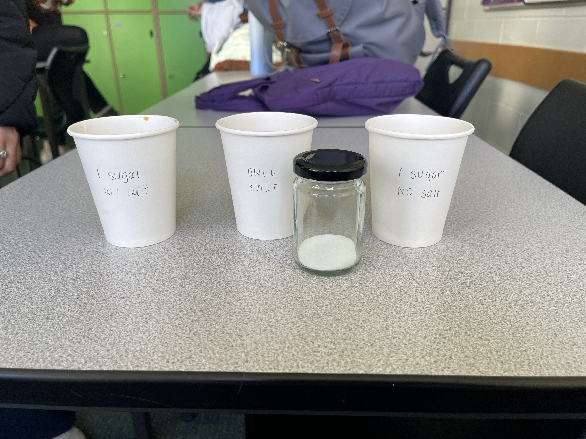

Should we be adding salt to our tea?
Here in Sixth Form, we take our tea very seriously.
Chemist Michelle Francl recently wrote a book called Steeped: The Chemistry of Tea, in which she goes into detail about how to make the perfect cup of tea using science. Her most controversial suggestion is adding a pinch of salt to a fresh brew. The reasoning is that a key element of salt, sodium ions, interacts with the chemical mechanism that produces the perception of a bitter taste (Francl, 2024).
Another of her recommendations is to warm milk before adding it to tea to make sure it doesn’t spoil, but we found the suggestion of adding salt the most intriguing.
The Experiment
So we added some salt to our tea. We had a control of just milk and sugar, and another with milk, sugar and salt to compare. We also made a cup without sugar to see how that measured up.
The Results
It is worth noting that this is just our opinion, although a couple of teachers agreed with us. We found that in comparison to the control tea, the one with salt added seemed smoother and softer and any bitterness from overbrewing the tea was cancelled out. The one with salt and milk but without sugar was just bad. Would not recommend.
Overall, putting a pinch of salt in your tea is worth a try, but it has to be a very small amount.
Bibliography:
https://www.newscientist.com/article/2414348-the-chemist-who-told-us-to-put-salt-in-our-tea-explains-why-she-did-it/